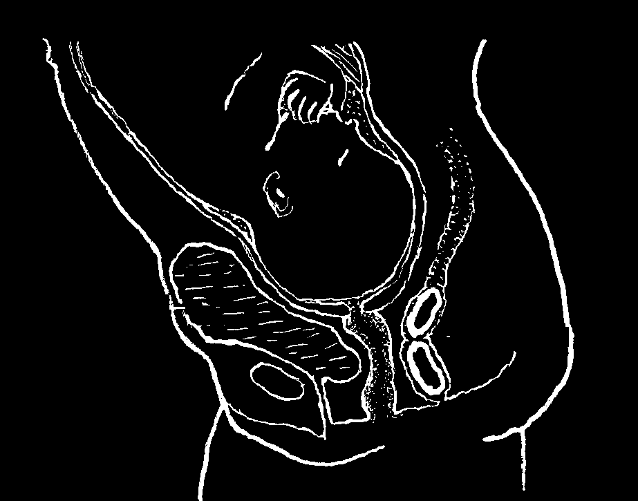
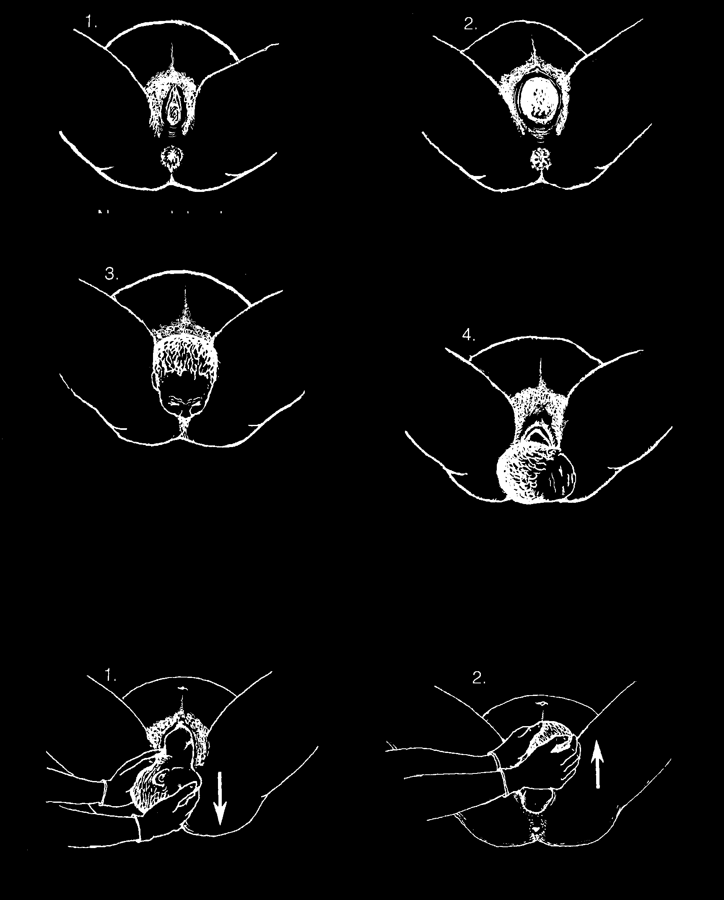
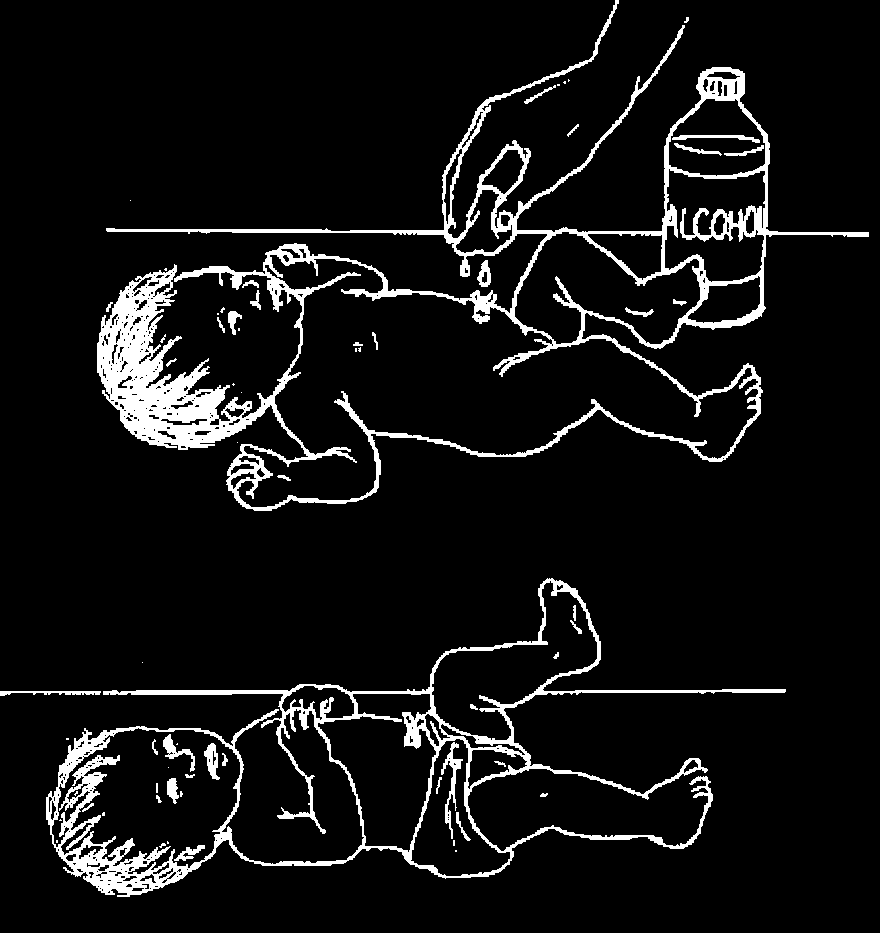
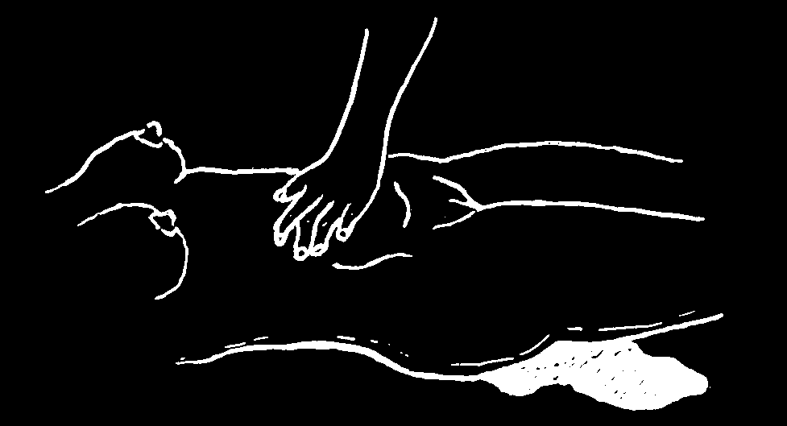
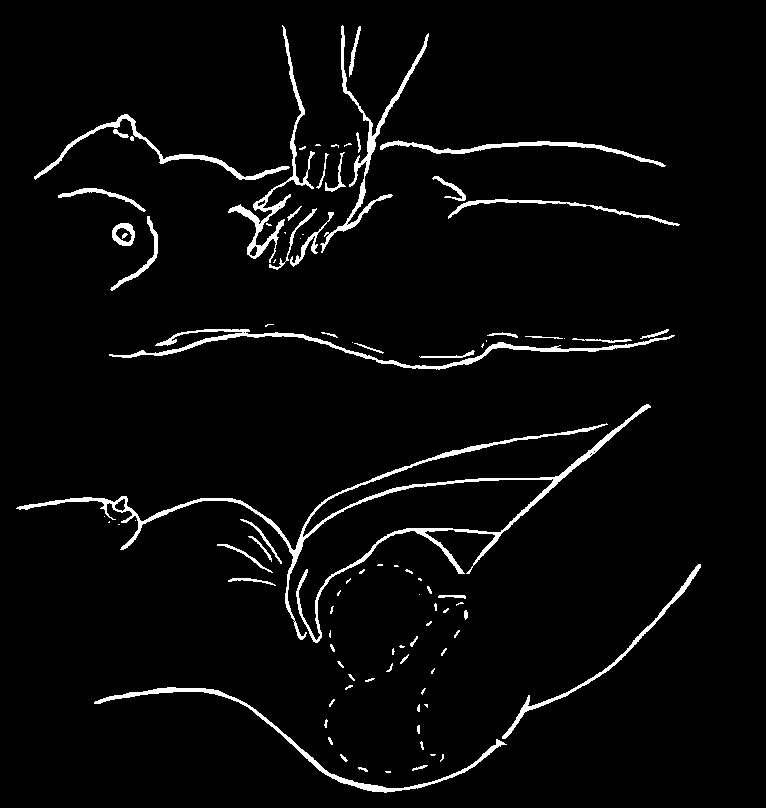
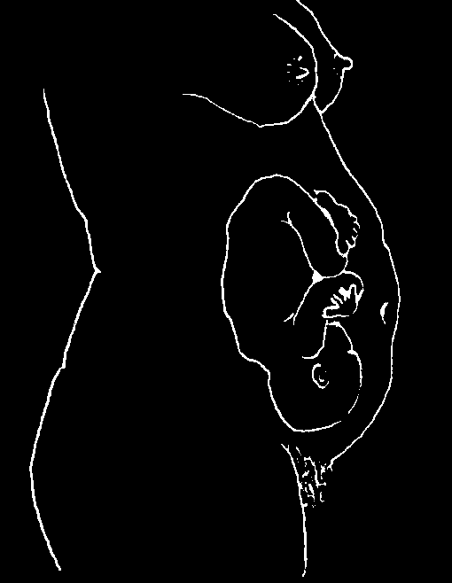
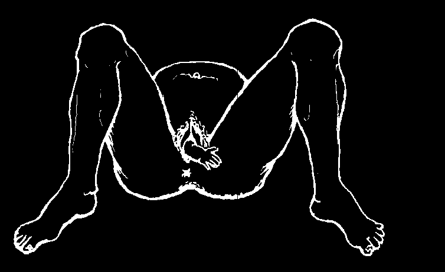
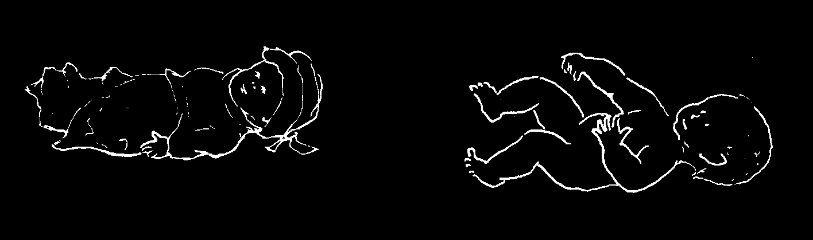

Checking if the Baby Is in a Good Position
To make sure the baby is head down, in the normal position for birth, feel for his head, like this:
1. Have the mother breathe out all the way.
With the thumb and 2 fingers, push in here, just above the pelvic bone.
With the other hand, feel the top of the womb.
The baby’s butt is
Butt up larger and wider.
feels larger high up.
His head is hard and round.
Butt down feels larger low down.
2. Push gently from side to side, first with one hand, then the other.
If the baby’s butt
If the baby still is high in is pushed gently the womb, you can move sideways, the the head a little. But if baby’s whole body it has already engaged will move too.
(dropped lower) getting ready for birth, you cannot move it.
But if the head is pushed gently
A woman’s first baby sideways, it will sometimes engages 2 weeks bend at the neck before labor begins. Later and the back babies may not engage until will not move.
labor starts.
If the baby’s head is down, his birth is likely to go well.
If the head is up, the birth may be more difficult (a breech birth), and it is safer for the mother give birth in or near a hospital.
If the baby is sideways, the mother should have her baby in a hospital. She and the baby are in danger (see p. 267).

SIGNS THAT SHOW LABOR IS NEAR
• A few days before labor begins, usually the baby moves lower in the womb.
This lets the mother breathe more easily, but she may need to urinate more often because of pressure on the bladder. (In the first birth these signs can appear up to
4 weeks before delivery.)
• A short time before the labor begins, some thick mucus (jelly) may come out.
Or some mucus may come out for 2 or 3 days before labor begins. Sometimes it is tinted with blood. This is normal.
• The contractions (sudden tightening of the womb) or labor pains may start up to several days before childbirth at first a long time usually passes between contractions—several minutes or even hours. When the contractions become stronger, regular, and more frequent, labor is beginning.
• Some women have a few practice contractions weeks before labor. This is normal. On rare occasions, a woman may have false labor. This happens when the contractions are coming strong and close together, but then stop for hours or days before childbirth actually begins. Sometimes walking, a warm bath, or resting will help calm the contractions if they are false, or bring on childbirth if they are real.
Even if it is false labor, the contractions help to prepare the womb for labor.
Labor pains are caused by contractions or tightening of the womb.
Between contractions the womb is relaxed like this:
During contractions, the womb tightens and lifts up like this:
The contractions push the baby down farther. This causes the cervix or
'door of the womb’ to open—a little more each time.
• The bag of water that holds the baby in the womb usually breaks with a flood of liquid sometime after labor has begun. If the waters break before the contractions start, this usually means the beginning of labor. After the waters break, the mother should keep very clean. Walking back and forth may help bring on labor more quickly. To prevent infection, avoid sexual intercourse, do not sit in a bath of water, and do not douche or put anything in the vagina. If labor does not start within 12 hours, seek medical help.

THE STAGES OF LABOR
Labor has 3 parts or stages:
• The first stage lasts from the beginning of the strong contractions until the womb opens and the baby starts to move through the birth canal.
• The second stage lasts from when the baby enters the birth canal until it is born.
• The third stage lasts from the birth of the baby until the placenta (afterbirth)
comes out.
THE FIRST STAGE OF LABOR usually lasts 10 to 20 hours or more when it is the mother’s first birth, and from 7 to 10 hours in later births. This varies a lot.
During the first stage of labor, the mother should not try to hurry the birth. It is natural for this stage to go slowly. The mother may not feel the progress and begin to worry. Try to reassure her. Tell her that most women have the same concern.
The mother should not try to push or bear down until the child is beginning to move down into the birth canal, and she feels she has to push.
The mother should keep her bowels and bladder empty.
If the bladder and the
bowels are full, they get in
the way when the baby is
being born.
Bladder full of urine
Feces
(stools)
During labor, the mother should urinate often. If she has not moved her bowels in several hours, an enema may make labor easier. During labor the mother should drink water or other liquids often. Too little liquid in the body can slow down or stop labor. If labor is long, she should eat lightly, as well. If she is vomiting, she should sip a little Rehydration Drink, herbal tea, or fruit juices between each contraction.
During labor the mother should change positions often or get up and walk about from time to time. She should not lie flat on her back for a long time.

During the first stage of labor, the midwife or birth attendant should:
♦ Wash the mother’s belly, genitals, buttocks, and legs well with soap and warm water. The bed should be in a clean place with enough light to see clearly.
♦ Spread clean sheets, towels, or newspapers on the bed and change them whenever they get wet or dirty.
♦ Have a new, unopened razor blade ready for cutting the cord, or boil a pair of scissors for 15 minutes. Keep the scissors in the boiled water in a covered pan until they are needed.
The midwife should not massage or push on the belly. She should not ask the mother to push or bear down at this time.
If the mother is frightened or in great pain, have her take deep, slow, regular breaths during each contraction, and breathe normally between them. This will help control the pain and calm her. Reassure the mother that the strong pains are normal and that they help to push her baby out.
THE SECOND STAGE OF LABOR, in which the child is born: Sometimes this begins when the bag of water breaks. It is often easier than the first stage and usually does not take longer than 2 hours. During the contractions the mother bears down (pushes) with all her strength. Between contractions, she may seem very tired and half asleep. This is normal.
To bear down, the mother should take a deep breath and push hard with her stomach muscles, as if she were having a bowel movement. If the child comes slowly after the bag of waters breaks, the mother can double her knees like this, while squatting, sitting propped up, kneeling, or lying down.
When the birth opening of the mother stretches, and the baby’s head begins to show, the midwife or helper should have everything ready for the birth of the baby.
At this time the mother should try not to push hard, so that the head comes out more slowly. This helps prevent tearing of the opening (see p. 269 for more details).
In a normal birth, the midwife NEVER needs to put her hand or finger inside the mother. This is the most common cause of dangerous infections of the mother after the birth.
When the head comes out, the midwife may support it, but must never pull on it.
If possible, wear gloves to attend the birth—to protect the health of the mother, baby, and midwife.

Normally the baby is born head first like this:
Now push hard.
Now try not to push hard. Take many short, fast breaths. This helps prevent tearing the opening
(see p. 269).
The head usually comes out face down. If the baby has feces (shit)
in her mouth and nose, clean it out
Then the baby’s body turns to immediately (see p. 262).
one side so the shoulders can come out.
If the shoulders get stuck after the head comes out:
The midwife can take the baby’s
Then she can raise the head a head in her hands and lower it little so that the other shoulder very carefully, so the shoulder comes out.
can come out.
All the force must come from the mother. The midwife should never pull on the head, or twist or bend the baby’s neck, because this can harm the baby.


THE THIRD STAGE OF LABOR begins when the baby has been born and lasts until the placenta (afterbirth) comes out. Usually, the placenta comes out by itself 5 minutes to an hour after the baby. In the meantime, care for the baby. If there is a lot of bleeding
(see p. 265) or if the placenta does not come out within 1 hour, seek medical help.
CARE OF THE BABY AT BIRTH
Immediately after the baby comes out:
♦ Put the baby’s head down so that the mucus comes out of his mouth and throat. Keep it this way until he begins to breathe.
♦ Keep the baby below the level of the mother until the cord is tied. (This way, the baby gets more blood and will be stronger.)
♦ Dry the baby and if he does not begin to breathe right away, rub his back with a towel or a cloth.
♦ If he still does not breathe, clean the mucus out of his nose and mouth with a clean cloth wrapped around your finger.
♦ If the baby has not begun to breathe within one minute after birth, start MOUTH-TO-MOUTH BREATHING at once (see p. 80).
♦ Wrap the baby in a clean cloth. It is very important not to let him get cold, especially if he is premature (born too early).
How to Cut the Cord
When the child is born, the cord pulses and is fat and blue. WAIT.
After a while, the cord becomes thin and white. It stops pulsing. Now tie it in
2 places with very clean, dry strips of cloth, string, or ribbon. These should have been recently ironed or heated in an oven. Cut between the ties, like this:
IMPORTANT: Cut the cord with a clean, unused razor blade. Before unwrapping it, wash your hands very well. Or wear clean rubber or plastic gloves. If you do not have a new razor blade, use freshly boiled scissors.
Always cut the cord close to the body of the newborn baby. Leave only about
2 centimeters attached to the baby. These precautions help prevent tetanus (see p. 182).

Care of the Cut Cord
Keep the cord stump clean and dry. Always wash your hands before touching the cord stump.
If the cord becomes dirty or has a lot of dried blood on it, clean it gently with medical alcohol or strong drinking alcohol, or with gentian violet. Do not put anything else on the cord—dirt and dung are especially dangerous. They can cause tetanus and kill the baby, see pages 182 to 184.
If the baby is wearing diapers, keep the diaper folded below the cord.
If the cord or the area around the cord gets red, drains pus, or smells bad, see page 272.
The cord stump usually falls off 5 to 7 days after birth. There may be a few drops of blood or smooth mucus when the cord falls off. This is normal. But if there is a lot of blood or any pus, get medical help.
Cleaning the Newborn Baby
With a warm, soft, damp cloth, gently clean away any blood or fluid.
It is better not to bathe the baby until after the cord drops off. Then bathe him daily in warm water, using a mild soap.
Put the Newborn Baby to the Breast at Once
Place the baby at its mother’s breast as soon as the baby is born. If the baby breastfeeds, this will help to make the afterbirth come out sooner and to prevent or control heavy bleeding.


THE DELIVERY OF THE PLACENTA (AFTERBIRTH)
Normally, the placenta comes out 5 minutes to 1/2 hour after the baby is born, but
sometimes it is delayed (see below).
Checking the afterbirth:
When the afterbirth comes out, pick it up and examine it to see if it is complete. If it is torn and there seem to be pieces missing, get medical help. A piece of placenta left inside the womb can cause continued bleeding or infection.
Use gloves or plastic bags on your hands to handle the placenta. Wash your hands well afterwards.
When the placenta is delayed in coming:
If the mother is not losing much blood, do nothing. Do not pull on the cord. This could cause dangerous hemorrhage (heavy bleeding). Sometimes the placenta will come out if the woman squats and pushes a little.
If the mother is losing blood, feel the womb (uterus) through the belly. If it is soft, do the following:
Massage the womb carefully, until
If the placenta does not come out soon and bleeding it gets hard. This should make it continues, push downward on the top of the womb very contract and push out the placenta.
carefully, while supporting the bottom of the womb like this.
If the placenta still does not come out, and the bleeding continues, give medicines to control the bleeding (see page 266) and seek medical help fast.
HEMORRHAGING (HEAVY BLEEDING)
When the placenta comes out, there is always a brief flow of blood. It normally lasts only a few minutes and not more than a quarter of a liter (1 cup) of blood is lost. (A little bleeding may continue for several days and is usually not serious.)
WARNING: Sometimes a woman may be bleeding severely inside without much blood coming out. Feel her belly from time to time. If it seems to be getting bigger, it may be filling with blood. Check her pulse often and watch for signs of shock (p. 77).


♦ If you have oxytocin, misoprostol or ergonovine, use it, following the instructions on the next page. (Use oxytocin or misoprostol instead of ergonovine if the placenta is still inside.)
To help prevent or control heavy bleeding, let the baby suck the mother’s breast. If the baby will not suck, have someone else suck or gently pull and massage the mother’s nipples. This will cause her to produce a hormone (pituitrin)
that helps control bleeding.
If heavy bleeding continues, or if the mother is losing a great deal of blood through a slow trickle, do the following:
♦ Get medical help fast. If the bleeding does not stop quickly, the mother may need to be given serum blood in a vein (a transfusion).
♦ The mother should drink a lot of liquid (water, fruit juices, tea, soup, or
Rehydration Drink—p. 152). If she grows faint or has a fast, weak pulse or shows other signs of shock, put her legs up and her head down (see p. 77).
♦ If the mother is losing a lot of blood, and is in danger of bleeding to death, try to stop the bleeding like this:
If the bleeding stops, check every
Massage the belly until you
5 minutes to make sure the womb stays can feel the womb get hard.
hard. If it does not, massage it again.
As soon as the womb gets hard and bleeding stops. stop massaging.
Check it every minute or so. If it gets soft, massage it again.
♦ If the bleeding continues in spite of massaging the womb, do the following:
Using all of your weight, press down with both hands, one over the other, on the belly just below the navel. You should continue pressing down a long time after the bleeding stops.
♦ If the bleeding is still not under control:
Press both hands into the belly above the womb. Scoop it up and fold it forward so the womb is pressed hard against the pubic bone.
womb
Press as hard as you can, using your weight if your muscles are not strong enough. Keep pressing for several minutes after the bleeding has stopped, or until you can get medical help.
bone
Note: Although some doctors use it, vitamin K does not help stop bleeding related to childbirth, miscarriage, or abortion. Vitamin K is only helpful for babies. Do not give to adults.

MEDICINES TO CONTROL BLEEDING AFTER BIRTH OR
MISCARRIAGE: Ergonovine, Oxytocin, Misoprostol
Ergonovine, ergometrine, oxytocin, and misoprostol are all medicines that cause contractions of the uterus and its blood vessels. They are important but dangerous drugs. Used the wrong way, they can cause the death of the mother or the child in her womb. Used correctly, they can save lives. These are their lifesaving uses:
1. To control bleeding after childbirth. If there is heavy bleeding before or after the placenta has come out, inject 10 units of oxytocin in the muscle (Pitocin, p. 390)
as soon as possible. If the bleeding does not stop in 15 minutes, inject another
10 units. If there is no oxytocin, you can use misoprostol (Cytotec, p. 391) instead.
For heavy bleeding after the placenta comes out, you can give ergonovine or ergometrine (Ergotrate, p. 390). But do not use ergonovine or ergometrine before the placenta is out, or for a woman who has hypertension.
IMPORTANT: Midwives and other health workers who help women deliver should carry enough medicines to stop heavy bleeding if it happens. Too many mothers bleed to death who could be saved.
2. To help prevent heavy bleeding after birth. Some authorities now recommend giving all women a single dose of oxytocin, ergonovine, or misoprostol as described above to prevent heavy bleeding after birth. This will prevent some dangerous bleeding, but also treats many women with medicine when they do not need it. A midwife who only has a little medicine may choose to save the medicine she has for emergencies.
3. To control the bleeding of a miscarriage (p. 281). If the woman is rapidly losing blood and medical help is far away, use oyxtocin, misoprostol, or ergonovine as suggested above.
WARNING: The use of ergonovine, oxytocin or misoprostol to hasten childbirth or give strength to the mother in labor is very dangerous for both her and the child. These medicines are rarely needed before the baby is born, and then only a highly trained birth attendant should use them.
THE USE OF MEDICINES
CAN KILL THE
TO 'GIVE STRENGTH’ TO
MOTHER, THE
THE MOTHER DURING
BABY, OR BOTH.
CHILDBIRTH...
There is no safe medicine to give strength to the mother or to make the birth quicker or easier.
If you want the woman to have enough strength for childbirth, have her eat plenty of nutritious foods, especially during the 9 months of pregnancy (see p. 107). Also encourage her to space a few years between her pregnancies so her body can regain its full strength (see Family Planning, p. 283).


DIFFICULT BIRTHS
It is important to get medical help as quickly as possible when there is any serious problem during labor. Many problems or complications may come up, some more serious than others. Here are a few of the more common ones:
1. LABOR STOPS OR SLOWS DOWN, or lasts a very long time after being strong or after the waters break. This has several possible causes:
• The woman may be frightened or upset. This can slow down or even stop contractions. Talk to her. Help her to relax. Try to reassure her. Explain that the birth is slow, but there are no serious problems. Encourage her to change her position often and to drink, eat, and urinate. Stimulation (massage or milking motion) of the nipples can help speed labor.
• The baby may be in an unusual position.
Feel the belly between contractions to see if the baby is sideways. Sometimes the midwife can turn the baby through gentle handling of the woman’s belly. Try to work the baby around little by little between contractions, until the head is down. But do not use force as this could tear the womb or placenta, or pinch the cord. If the baby cannot be turned, try to get the mother to the hospital.
• If the baby is facing forward rather than backward, you may feel the lumpy arms and legs rather than the rounded back. This is usually no big problem, but labor may be longer and cause the woman more back pain.
She should change positions often, as this may help turn the baby. Have her try on her hands and knees.
• The baby’s head may be too large to fit through the woman’s hip bones
(pelvis). This is more likely in a woman with very narrow hips or a young woman or girl whose body is not fully grown. (It is very unlikely in a woman who has given normal birth before.) You may feel that the baby does not move down. If you suspect this problem, try to get the mother to a hospital as she may need an operation (Cesarean). Women who are of short stature
(dwarfs), have very narrow hips or are especially young should have at least their first child in or near a hospital.
• If the mother has been vomiting or has not been drinking liquids, she may be dehydrated. This can slow down or stop contractions. Have her sip
Rehydration Drink or other liquids after each contraction.



2. BREECH DELIVERY (the buttocks come out first). Sometimes the midwife can tell if the baby is in the breech position by feeling the mother’s belly (p. 257) and listening to the baby’s heartbeat (p. 252).
A breech birth may be easier in this position:
If the baby’s legs come out, but not the arms, wash your hands very well, rub them with alcohol (or wear sterile gloves), and then...
slip your fingers inside and push the baby’s or press his arms against his shoulders toward the back, like this:
body, like this:
If the baby gets stuck, have the mother lie face up. Put your finger in the baby’s mouth and push his head towards his chest. At the same time have someone push the baby’s head down by pressing on the mother’s belly like this:
Have the mother push hard. But
never pull on the body of the baby.
3. PRESENTATION OF AN ARM (hand first). If the baby’s hand comes out first, get medical help right away. An operation may be needed to get the baby out.
4. Sometimes the CORD IS WRAPPED
AROUND THE BABY’S NECK so tightly he cannot come out all the way. Try to slip the loop of cord from around the baby’s neck. If you cannot do this, you may have to clamp or tie and cut the cord. Use boiled blunt tipped scissors.
5. FECES IN THE BABY’S MOUTH AND NOSE. When the waters break, if you see they contain a dark green (almost black) liquid, this is probably the baby’s first stools
(meconium). The baby may be in danger. If he breathes any of the feces into his lungs, he may die. As soon as his head is out, tell the mother not to push, but to take short, rapid breaths. Before the baby starts breathing, take time to suck the feces out of his nose and mouth with a suction bulb. Even if he starts breathing right away, keep sucking until you get all the feces out.


6. TWINS. Giving birth to twins is often more difficult and dangerous—both for the mother and babies—than giving birth to a single baby.
To be safe, the mother should give birth to twins in a hospital.
Because with twins labor often begins early, the mother should be within easy reach of a hospital after the seventh month of pregnancy.
Signs that a woman is likely to have twins:
• The belly grows faster and the womb is larger than usual, especially in the last months (see p. 251)
• If the woman gains weight faster than normal, or the common problems of pregnancy (morning sickness, backache, varicose veins, piles, swelling, and difficult breathing) are worse than usual, be sure to check for twins.
• If you can feel 3 or more large objects (heads and buttocks) in a womb that seems extra large, twins are likely.
• Sometimes you can hear 2 different heartbeats (other than the mother’s)—but this is difficult.
During the last months, if the woman rests a lot and is careful to avoid hard work, twins are less likely to be born too early.
Twins are often born small and need special care. However, there is no truth in beliefs that twins have strange or magic powers.
TEARING OF THE BIRTH OPENING
The birth opening must stretch a lot for the baby to come out. Sometimes it tears.
Tearing is more likely if it is the mother’s first baby.
Tearing can usually be prevented if care is taken:
The mother should try to
When the birth opening is
It may also help to put stop pushing when the stretching, the midwife can warm compresses baby’s head is coming out.
support it with one hand against the skin below the
This gives her birth opening and with the other hand birth opening. Start when time to stretch. In order not gently keep the head from it begins to stretch. You to push, she should pant coming too fast, like this:
can also massage the
(take many rapid breaths).
stretched skin with oil.
If a tear does happen, someone who knows how should carefully sew it shut after the placenta comes out (see p. 86 and 379).


CARE OF THE NEWBORN BABY
The Cord
To prevent the freshly cut cord from becoming infected, it should be kept clean and dry. The drier it is, the sooner it will fall off and the navel will heal. For this reason, it is better not to use a belly band, or if one is used, to keep it very loose (see p. 184 and 263).
The Eyes
To protect a newborn baby’s eyes from dangerous conjunctivitis, put a line of 1% tetracycline or erythromycin 0.5% to 1% ointment in each eye within the first 2 hours (p. 221 and 378). This is especially important if either parent has ever had signs of gonorrhea or chlamydia (p. 236).